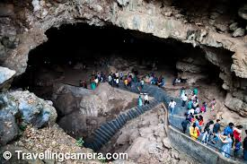
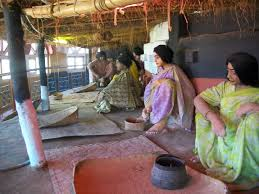

Today, Araku Valley is the largest certified organic and biodynamic farming coffee plantation in the world. But in 1999, when Naandi Foundation, an NGO with developmental economist Manoj Kumar at its helm, came to the valley, not many had heard about it. Its rich biodiversity and natural beauty were undercut by its remoteness and inaccessibility. And those weren’t the only challenges. Kumar discovered there were high rates of maternal and child mortality and a lack of basic health care and schools too. The first few years, Kumar spent preparing the ground for projects. Apart from creating livelihoods for farmers, Naandi Foundation’s work in Araku spans the areas of healthcare, nutrition, and education.
|  |
The Borra Caves (Borrā Guhalu) are located on the East Coast of India, in the Ananthagiri hills of the Araku Valley (with hill ranges' elevation varying from 800 to 1,300 m (2,600 to 4,300 ft)) of the Alluri Sitharama Raju district in Andhra Pradesh. The caves, one of the largest in the country, at an elevation of about 705 m (2,313 ft), distinctly exhibit a variety of speleothems ranging in size and irregularly shaped stalactites and stalagmites.[1][2] The caves are basically karstic limestone structures extending to a depth of 80 m (260 ft), and are considered the deepest caves in India.[3][4] The native name for the caves is Borrā Guhalu where Borra means abdomen in and Guhalu means caves in Telugu language.
At a distance of 7 km from Borra Caves, 39 km from Araku, 90 km from Vizag & 665 km from Hyderabad, Katiki or Katika Waterfall is magnificent waterfall situated near Borra Caves in Visakhapatnam district of Andhra Pradesh. It is one of the best waterfalls in Araku and also among the top places to visit in Araku. The name of the falls is derived from the name of the village nearby. Katiki waterfall is formed by the Gosthani River and it cascading down from a height of 100+ feet. The pond at the bottom of the waterfall is an excellent place for taking a bath after a tough trek to the place. It has to be reached by 20-30 minutes trek (one way) through lush forest and upwards to mountain top from the nearest motorable road. Cooking and camping are also permitted at this place. This is also a good place for trekking. To reach Katiki falls from Araku, you have to take Borra Caves road at Mulyaguda junction between Araku and Visakhapatnam (around 30 km from Araku, after Anantagiri). Cross the Borra Caves railway crossing on the same road. Nearly 2 km from the railway crossing, you have to take left turn where the straight road takes to Borra Caves (caves are 2 km from here). After 300 meters on the same road, take a left turn and go for about 4-5 km. The road ends at the railway track near Tunnel #44. From here, you have to cross the railway track and go straight trekking the mountain. The falls are nearly 20-30 minutes trek from here and the path is narrow and slippery. There are jeeps available from Gatevalsa (7 km from Katiki).
|  |
Located in Araku Valley, near Padmapura Botanical Gardens, the Tribal Museum was established in 1996 by the Andhra Pradesh Tourism Development Corporation. It was set up with the aim of conserving and displaying the tribal culture of the region. Various indigenous ways of living are exhibited in the museum through the display of objects of daily use such as jewellery, hunting tools and kitchen tools. Scenes of quotidian life are staged through the arrangement and construction of life-sized statues.
| S.NO | Place | Location |
|---|---|---|
| 1. | coffee plantation | Location |
| 2. | Borra Caves | Location |
| 3. | Katiki Waterfalls | Location |
| 4. | Tribal Museum | Location |